전기공사산업기사 (2009-03-01 기출문제)
1과목: 전기응용
1. 시속 45[km/h]의 열차가 반경 1000[m]의 곡선궤도를 주행할 때, 고도(cant)는 약 몇 [mm]인가? (단, 궤간은 1067[m]이다.)(오류 신고가 접수된 문제입니다. 반드시 정답과 해설을 확인하시기 바랍니다.)
- 10.3
- 13.4
- 17.0
- 18.0
(정답률: 74%)

2. 열전대의 종류에서 최고 사용온도가 가장 낮은 열전대는?
- 철-콘스탄탄
- 구리-콘스탄탄
- 크로멜-알루멜
- 백금-백금로듐
(정답률: 72%)
3. 방전개시 전압을 나타내는 것은?
- 스토크스의 법칙
- 패닝의 법칙
- 파센의 법칙
- 톰슨의 법칙
(정답률: 77%)
4. 루소선도가 그림과 같은 광원의 배광 곡선의 식은?
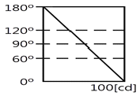
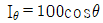
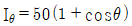
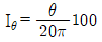
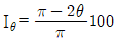
(정답률: 60%)
5. 간접식 저항로에 속하지 않는 것은 어느 것인가?
- 흑연화로
- 발열체로
- 탄소립로
- 염욕로
(정답률: 59%)
6. 서보기구에 유압 서보 모터나 전기 서보 모터가 사용되는 가장 큰 이유는?
- 편차가 적어야 하므로
- 회전량이 커야 하므로
- 정확도가 있어야 하므로
- 조작량이 커야 하므로
(정답률: 57%)
7. 음극만 발광하므로 직류 극성을 판별하는데 이용되는 것은?
- 형광등
- 수은등
- 네온전구
- 나트륨등
(정답률: 75%)
8. 회전부분의 관성모멘트를 증가시키기 위해 축에 플라이휠(축세륜)을 설치하게 된다. 한회전축에 대한 관성모멘트가 150[㎏·m2]인 회전체의 축세륜 효과[GD2]는 몇 [㎏·m2] 인가?
- 450
- 600
- 900
- 1000
(정답률: 79%)
9. 출력이 입력에 전혀 영향을 주지 못하는 제어는?
- 프로그램 제어
- 되먹임 제어
- 열린 루프제어
- 닫힌 루프 제어
(정답률: 76%)
10. SCR을 사용할 때 올바른 전압공급 방법은?
- 애노드⊕, 캐소드⊖, 게이트⊕
- 애노드⊕, 캐소드⊖, 게이트⊖
- 애노드⊖, 캐소드⊕, 게이트⊕
- 애노드⊖, 캐소드⊕, 게이트⊖
(정답률: 82%)
11. 물을 전기분해할 때 가성소다와 가성칼리를 20[%] 정도 첨가하는 이유는?
- 물의 도전율을 높이기 위해
- 수소와 산소가 혼합되는 것을 막기 위해
- 전극의 손상을 막기 위해
- 열의 발생을 줄이기 위해
(정답률: 74%)
12. 3상 유도 전동기의 플러깅(plugging)이란?
- 플러그를 사용하여 전원에 연결하는 방법
- 운전 중 2선의 접속을 바꾸어 상회전을 반대로 제동하는 방법
- 단상 상태로 기동할 때 일어나는 현상
- 고정자와 회전자의 상수가 일치하지 않을 때 일어나는 현상
(정답률: 86%)
13. 휘도 B가 무한히 넓은 등휘도 완전 확산성의 천장에서 직하 h만큼 떨어진 점의 수평 조도 [lx]는?
- B/h
- πB
- B/h2
- πB/h
(정답률: 60%)
14. 간접 조명의 설계에서 등(燈의) 높이란?
- 바닥에서 천장
- 피조면에서 천장
- 피조면에서 등기구
- 방바닥에서 등기구
(정답률: 57%)
15. 200[cd]의 점광원으로부터 5[m]의 거리에서 그 방향과 직각인 면과 60° 기울어진 수 평면상의 조도[lx]는 얼마인가?
- 4
- 6
- 8
- 10
(정답률: 62%)
16. 차륜을 하나의 궤도에서 다른 궤도로 유도하는 장치는?
- 전철기
- 철차
- 도입궤조
- 호륜궤조
(정답률: 45%)
17. 연축전지(납축전지)의 방전이 끝나면 그 양극(＋)극은 어느 물질로 되는가?
- Pb
- PbO
- PbO2
- PbSO4
(정답률: 71%)
18. 다음 중 인버터(Inverter)에 대한 설명으로 알맞은 것은?
- 직류를 더 높은 직류로 변환하는 장치
- 교류전압을 더 낮은 교류전원으로 변환하는 장치
- 교류전압을 직류전원으로 변화하는 장치
- 직류전원을 교류전원으로 변환하는 장치
(정답률: 82%)
19. 전기로에 사용하는 전극 중 주로 제강, 제선용 전기로에 사용되며 고유 저항이 가장 적은 것은?
- 인조흑연 전극
- 고급 천연흑연 전극
- 천연흑연 전극
- 무정형 탄소 전극
(정답률: 56%)
20. 폭 6[m], 길이 20[m]의 복도에 40[W]의 형광등을 사용하여 조도 100[lx]를 얻고자 한다. 형광등의 수는? (단, 조명률은 0.5, 감광 보상률은 1.5, 40[W] 형광등의 광속은 2500[lm] 이라 한다.)
- 12
- 15
- 20
- 25
(정답률: 69%)
2과목: 전력공학
21. 30일간의 최대수용전력이 200kW, 소비전력량이 72000kWh일 때, 월부하율은 몇 [%]인가?
- 30
- 40
- 50
- 60
(정답률: 16%)
22. 그림과 같이 임피던스 Z1, Z2 및 Z3인 송전선이 접속된 선로의 A쪽에서 전압파 E가 진행해 왔을 때 접속점 B에서 무반사로 되기 위한 조건은?
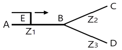
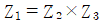
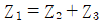
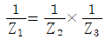
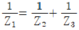
(정답률: 31%)
23. 전압 66000V, 주파수 60Hz, 길이 7km 1회선의 3상 지중 전선로에서 3상 무부하 충전 용량은 약 몇 [kVA]인가? (단, 케이블의 심선 1선1km의 정전 용량은 0.4㎌/㎞라 한다.)
- 2560kVA
- 4600kVA
- 7970kVA
- 13800kVA
(정답률: 13%)
24. 다음 중 전력 계통의 안정도 향상대책으로 볼 수 없는 것은?
- 직렬콘덴서 설치
- 병렬콘덴서 설치
- 중간 개폐소 설치
- 고속차단, 재폐로방식 채용
(정답률: 25%)
25. 초고압용 차단기에 사용되는 개폐저항기의 목적은?
- 차단속도 증진
- 개폐서어지 이상전압 억제
- 차단전류 감소
- 차단전류의 역률 개선
(정답률: 31%)
26. 배전 전압을 √3배하면 동일한 전력 손실률로 보낼 수 있는 전력은 몇 배가 되는가?
- √3
- 3/2
- 3
- 2√3
(정답률: 35%)
27. 그림에서 계기 Ⓜ이 지시하는 것은?
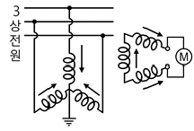
- 정상전류
- 영상전압
- 역상전압
- 정상전압
(정답률: 28%)
28. 송전선로에서 4단자 정수 A, B, C, D 사이의 관계는?
- BC－AD＝1
- AC－BD＝1
- AB－CD＝1
- AD－BC＝1
(정답률: 37%)
29. 다음 중 원방감시제어(SCADA)의 기능과 관계가 먼 것은?
- 원격 제어 기능
- 원격 측정 기능
- 부하 조정 기능
- 자동 기록 기능
(정답률: 29%)
30. 송전선로를 연가하는 주된 목적은?
- 페란티효과의 방지
- 직격뢰의 방지
- 선로정수의 평형
- 유도뢰의 방지
(정답률: 32%)
31. 송전계통에서 이상전압의 방지대책으로 볼 수 없는 것은?
- 철탑 접지저항의 저감
- 가공 송전선로의 피뢰용으로서의 가공지선에 의한 뇌차폐
- 기기 보호용으로서의 피뢰기 설치
- 복도체 방식 채택
(정답률: 28%)
32. 용량 25000kVA, 임피던스 10%인 3상 변압기가 2차측에서 3상 단락 되었을 때, 단락 용량은 몇 [MVA]인가?
- 225MVA
- 250MVA
- 275MVA
- 433MVA
(정답률: 25%)
33. 유역면적 550km2인 어떤 하천의 1년간 강수량이 1500㎜이다. 증발침투 등의 손실을 30%라고 하면, 1년을 통하여 평균적으로 흐른 유량은 약 몇 [m3/s] 이겠는가?
- 18.3m3/s
- 21.3m3/s
- 24.2m3/s
- 26.2m3/s
(정답률: 18%)
34. 전력이 같고, 단면적과 긍장이 같을 때, 전압 변동률[%]은?
- 전압에 비례한다.
- 전압의 제곱에 비례한다.
- 전압에 반비례한다.
- 전압의 제곱에 반비례한다.
(정답률: 33%)
35. 송전선로의 중성점을 접지하는 주된 목적은?
- 동량의 절약
- 송전용량의 증가
- 전압강하의 감소
- 이상전압의 억제
(정답률: 38%)
36. 전력용 퓨즈는 주로 어떤 전류의 차단을 목적으로 사용 하는가?
- 충전전류
- 부하전류
- 단락전류
- 지락전류
(정답률: 37%)
37. 전선의 장력이 1500[kgf]일 때, 지선에 걸리는 장력은 몇 [kgf]인가?
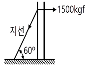
- 750kgf
- 750√3kgf
- 3000kgf
- 3000/√3 kgf
(정답률: 12%)
38. 다음 중 보호계전기가 구비하여야 할 조건으로 거리가 먼 것은?
- 동작이 정확하고 감도가 예민할 것
- 열적, 기계적 강도가 클 것
- 조정 범위가 좁고 조정이 쉬울 것
- 고장 상태를 신속하게 선택할 것
(정답률: 31%)
39. 공기의 파열극한 전위경도는 정현파 교류의 실효치로 약 몇 [kV/㎝]인가?
- 21kV/㎝
- 25kV/㎝
- 30kV/㎝
- 33kV/㎝
(정답률: 16%)
40. 가공 전선로의 전선 진동을 방지하기 위한 방법으로 옳지 않은 것은?
- 토셔널 댐퍼(torsional damper)의 설치
- 스프링 피스톤 댐퍼와 같은 진동 제지권을 설치
- 경동선을 ACSR로 교환
- 클램프나 전선 접촉기 등을 가벼운 것으로 바꾸고 클램프 부근에 적당히 전선을 첨가
(정답률: 45%)
3과목: 전기기기
41. 직류 분권 발전기에서 무부하 포화곡선이 940If＝(33＋If)[V]인 식으로 주어졌을 때 계자 권선의 저항이 10[Ω]이다. 이때 정상(頂上)전압[V]은 얼마인가?
- 280
- 310
- 610
- 720
(정답률: 18%)
42. 다음 전동력 응용기기에서 GD2의 값이 적은 것이 바람직한 장치는?
- 압연기
- 엘리베이터
- 송풍기
- 냉동기
(정답률: 30%)
43. 전압 변동율이 작은 동기 발전기는?
- 전기자 반작용이 크다.
- 동기 리액턴스가 크다.
- 단락비가 크다.
- 값이 싸다.
(정답률: 41%)
44. 다음 중 유도 전동기의 속도제어법이 아닌 것은?
- 2차 저항법
- 2차 여자법
- 1차 저항법
- 주파수 제어법
(정답률: 30%)
45. 3상 권선형 유도전동기의 속도 제어를 위해서 2차 여자법을 사용하고자 할 때, 그 방법은?
- 1차 권선에 가해주는 전압과 동일한 전압을 회전자에 가한다.
- 직류 전압을 3상 일괄해서 회전자에 가한다.
- 회전자 기전력과 같은 주파수의 전압을 회전자에 가한다.
- 회전자에 저항을 넣어 그 값을 변화시킨다.
(정답률: 35%)
46. 변압기의 원리는?
- 전자 유도 작용을 이용
- 정전 유도 작용을 이용
- 자기 유도 작용을 이용
- 플레밍의 오른손 법칙을 이용
(정답률: 33%)
47. 변압기의 철손을 알 수 있는 시험은?
- 부하 시험
- 무부하 시험
- 단락 시험
- 유도 시험
(정답률: 21%)
48. 다음 중 동기 전동기의 난조 방지에 가장 유효한 것은?
- 자극수를 적게 한다.
- 회전자의 관성을 크게한다.
- 자극면에 제동 권선을 설치한다.
- 동기 리액턴스 xx를 작게 하고 동기화력을 크게한다.
(정답률: 35%)
49. 동기발전기의 병렬운전에 필요한 조건이 아닌 것은?
- 기전력의 주파수가 같을 것
- 기전력의 위상이 같을 것
- 임피던스 및 상회전 방향과 각 변위가 같을 것
- 기전력의 크기가 같을 것
(정답률: 37%)
50. 리액터 기동방식에 리액터 대신에 저항기를 사용한 것으로서 전동기의 전원측에 직렬로 저항을 접속하고, 전원 전압을 낮게 감압하여 기동한 후 서서히 저항을 감소시켜 가속하고, 전속도에 도달하면 이를 단락하는 방법에 해당 되는 것은?
- 직입 기동방식
- Y－△ 기동
- 1차 저항 기동 방식
- 기동 보상기에 의한 기동
(정답률: 17%)
51. 부하 전류가 50[A]일 때, 단자 전압이 100[V]인 직류 직권 발전기의 부하 전류가 70[A]로 되면 단자 전압은 몇 [V]가 되겠는가? (단, 전기자 저항 및 직권계자 권선의 저항은 각각 0.1[Ω]이고, 전기자 반작용과 브러시의 접촉 저항 및 자기 포화는 모두 무시한다.)
- 110
- 114
- 140
- 154
(정답률: 12%)
52. 변압기에서 생기는 와류손은 철심 두께와 어떤 관계가 있는가?
- 철심 두께의 1/2승에 비례
- 철심 두께에 비례
- 철심 두께의 2승에 비례
- 철심 두께의 3승에 비례
(정답률: 29%)
53. 동기기의 안정도 증진법은 다음 중 어느 것인가?
- 동기화 리액턴스를 작게 할 것
- 회전자의 플라이휠 효과를 작게 할 것
- 역상, 영상 임피던스를 작게 할 것
- 단락비를 작게 할 것
(정답률: 30%)
54. 전압 정류의 역할을 하는 것은?
- 보극
- 탄소
- 보상권선
- 리액턴스 코일
(정답률: 25%)
55. 3상 유도전동기에서 비례추이를 하지 않는 것은?
- 효율
- 역율
- 1차 전류
- 동기 와트
(정답률: 16%)
56. 정격전압 100[V], 전기자 전류 50[A]일 때, 1500[rpm]인 직류 분권 전동기의 무부하 속도는 약 몇 [rpm]인가? (단, 전기자 저항은 0.1[Ω]이고, 전기자 반작용은 무시한다.)
- 1382
- 1421
- 1579
- 1623
(정답률: 18%)
57. PWM 인버터에서 나타나는 고조파의 영향이 아닌 것은?
- 손실
- 기계적인 마찰과 관성
- 소음과 진동
- 토크 맥동
(정답률: 26%)
58. 변압기의 개방시험으로 측정 할 수 없는 것은?
- 무부하전류
- 철손
- 여자 어드미턴스
- 임피던스 전압
(정답률: 15%)
59. 단상 유도전압조정기와 3상 유도전압조정기의 비교 설명으로 옳지 않은 것은?
- 모두 회전자와 고정자가 있으며 한편에 1차 권선을 다른 편에 2차 권선을 둔다.
- 모두 입력전압과 이에 대응한 출력 전압 사이에 위상차가 있다.
- 단상유도전압 조정기는 단락 권선이 필요하나 3상에는 필요 없다.
- 모두 회전자의 회전각에 따라 조정된다.
(정답률: 18%)
60. 전기자 저항이 0.4[Ω]이며, 단자 전압이 200[V], 부하 전류가 46[A], 계자 전류가 4[A]인 직류 분권 발전기의 유기 기전력은 몇 [V]인가?
- 180
- 220
- 225
- 240
(정답률: 33%)
4과목: 회로이론
61. R＝10[Ω], L＝0.045[H]의 직렬 회로에 실효값 140[V], 주파수 25[Hz]의 정현파 교류 전압을 가했을 때, 임피던스[Ω]의 크기는 약 얼마인가?
- 17.25
- 15.31
- 12.25
- 10.41
(정답률: 30%)
62. 그림에서 저항 R이 접속되고 여기에 3상 평형 전압이 가해져 있다. 지금 X표의 곳에서 1선이 단선되었다 하면, 소비 전력은 처음의 몇 배로 되는가?
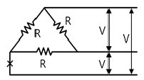
- 1.0
- 0.7
- 0.5
- 0.25
(정답률: 15%)
63. 그림과 같은 파형의 교류전압 V와 전류 i 간의 등가역률은 얼마인가? (단, v=Vm sinωt[V],
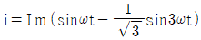
[A]이다.)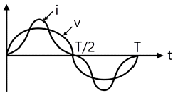
- √3/2
- √4/2
- 0.8
- 0.9
(정답률: 19%)
64.
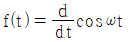
를 라플라스 변환하면?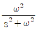
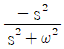
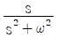
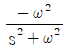
(정답률: 13%)
65. 그림과 같은 단위 계단 함수는?
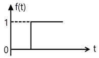
- u(t)
- u(t-a)
- u(a-t)
- -u(t-a)
(정답률: 30%)
66. Z＝8＋j6[Ω]인 평형 Y부하에 선간 전압이 200[V]인 대칭 3상 전압을 가할 때 선전류는 약 몇 [A]인가?
- 0.08
- 11.5
- 17.8
- 19.5
(정답률: 29%)
67. R-C 직렬회로의 과도상태 현상에 관한 설명 중 옳게 표현된 것은?
- 과도 전류값은 RC값에 상관이 없다.
- RC값이 클수록 회로의 과도값도 빨리 사라진다.
- RC값이 클수록 과도 전류값은 천천히 사라진다.
- 1/RC의 값이 클수록 과도 전류값은 천천히 사라진다.
(정답률: 26%)
68. 비정현파에 있어서 정현 대칭의 조건은?
- f(t)＝f(-t)
- f(t)＝-f(t)
- f(t)＝-f(-t)
- f(t)＝-f(t＋π)
(정답률: 32%)
69. 코일의 권수 N＝1000, 저항 R＝20[Ω]이다. 전류 I＝10[A]이 흐를 때, 자속 ø＝3×10-2[Wb]이다. 이 회로의 시정수[s]는 얼마인가?
- 0.15
- 0.4
- 3.0
- 4.0
(정답률: 14%)
70. 그림과 같은 4단자 회로의 4단자 정수 중 D의 값은?
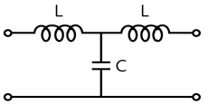
- 1－ω2LC
- jωL(2－ω2LC)
- jωC
- jωL
(정답률: 18%)
71. 어떤 정현파 교류의 실효값이 314[V]일 때, 평균값은 약 몇 [V]인가?
- 142
- 283
- 365
- 382
(정답률: 24%)
72. 다음과 같은 회로가 정저항 회로로 되기 위해서는 C[㎌]를 얼마로 하면 좋은가? (단, R＝10[Ω], L＝100[mH])
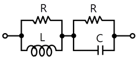
- 1
- 10
- 100
- 1000
(정답률: 19%)
73. 그림과 같은 회로에서 인가 전압에 의한 전류 i를 입력, Vo를 출력이라 할 때, 전달 함수는? (단, 초기조건은 모두 0 이다.)
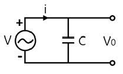
- 1/Cs
- Cs
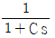
- 1+Cs
(정답률: 17%)
74. R＝40[Ω], L＝80[mH]의 코일이 있다. 이 코일에 100[V], 60[Hz]의 전압을 가할 때, 소비되는 전력[W]은?
- 200
- 160
- 120
- 100
(정답률: 19%)
75. 이상적인 전압원과 전류원의 내부저항[Ω]은 각각 얼마인가?
- 전압원과 전류원의 내부저항은 모두 0이다.
- 전압원의 내부저항은 ∞이고, 전류원의 내부저항은 0이다.
- 전압원과 전류원의 내부저항은 모두 ∞이다.
- 전압원의 내부저항은 0이고, 전류원의 내부저항은 ∞이다.
(정답률: 14%)
76. 한 상의 임피던스 Z＝6＋j8[Ω]인 평형 Y부하에 평형 3상 전압 200[V]를 인가할 때 무효전력 [Var]은 약 얼마인가?
- 1330
- 1848
- 2381
- 3200
(정답률: 14%)
77. 비정현파
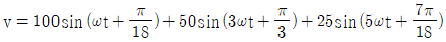
[V]인 경우 실효치 전압[V]은?- 71
- 81
- 91
- 101
(정답률: 26%)
78. 어떤 회로망의 4단자 정수가
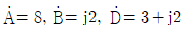
이면 회로망의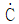
는 얼마인가?- 2＋j3
- 3＋j3
- 24＋j14
- 8－j11.5
(정답률: 18%)
79. 회로에서 저항 0.5[Ω]에 걸리는 전압[V]은?
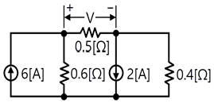
- 0.62
- 0.93
- 1.47
- 1.68
(정답률: 11%)
80.
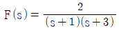
의 역 라플라스 변환은?- e-t－e-3t
- et－e3t
- e-t－e3t
- et－e-3t
(정답률: 29%)
5과목: 전기설비
81. 옥내에 시설하는 관등회로의 사용전압이 1000[V]를 넘는 방전등 공사에 사용되는 네온 변압기 외함의 접지공사로 알맞은 것은?
- 제1종 접지공사
- 제2종 접지공사
- 제3종 접지공사
- 특별제3종 접지공사
(정답률: 20%)
82. 특별고압 가공전선과 가공약전류 전선 사이에 시설하는 보호망에서 보호망을 구성하는 금속선 상호간의 간격은 가로 및 세로를 각각 몇 [m] 이하로 시설하여야 하는가?
- 0.75m
- 1m
- 1.25m
- 1.5m
(정답률: 18%)
83. 시가지에 시설하는 154kV 가공전선로를 도로와 제1차 접근상태로 시설하는 경우, 전선과 도로와의 이격거리는 몇 [m] 이상이어야 하는가?
- 4.4m
- 4.8m
- 5.2m
- 5.6m
(정답률: 21%)
84. 사용 전압이 60000[V] 이하인 특별고압 가공 전선로는 상시정전유도작용(常時靜電誘導作用)에 의한 통신상의 장해가 없도록 시설하기 위하여 전화선로의 길이 12km 마다 유도 전류는 몇 [㎂]를 넘지 않도록 하여야 하는가?
- 1㎂
- 2㎂
- 3㎂
- 5㎂
(정답률: 29%)
85. 옥내 배선의 사용 전압이 200V 인 경우에 이를 금속관 공사에 의하여 시설하려고 한다. 다음 중 옥내배선의 시설로서 옳은 것은?
- 전선은 경동선으로 4㎜의 단선을 사용하였다.
- 전선은 옥외용 비닐절연전선을 사용하였다.
- 콘크리트에 매설하는 전선관의 두께는 1.0㎜를 사용 하였다.
- 금속관에는 제3종 접지공사를 하였다.
(정답률: 24%)
86. 가요 전선관 공사에 있어서 저압 옥내 배선 시설에 맞지 않는 것은?
- 전선은 절연전선일 것
- 가요 전선관 안에는 전선에 접속점이 없을 것
- 1종 금속제 가요전선관의 두께는 0.8㎜ 이상일 것
- 일반적으로 가요전선관은 3종 금속제 가요전선관 일 것
(정답률: 23%)
87. 특별고압 가공전선이 저고압 가공전선 등과 제2차 접근 상태로 시설되는 경우 사용전압이 35000V 이하인 특별 고압 가공전선과 저고압 가공전선 등 사이에 무엇을 시설하는 경우에 특별고압 가공전선로를 제2종 특별고압 보안공사에 의하지 아니 하여도 되는가? (단, 애자장치에 관한 부분에 한 한다.)
- 접지설비
- 보호망
- 차폐장치
- 전류제한장치
(정답률: 20%)
88. 저압의 전선로 중 절연 부분의 전선과 대지 간 및 전선의 심선 상호 간의 절연저항에 대한 기준으로 옳은 것은?
- 사용 전압에 대한 누설 전류가 최대 공급 전류의 1/1200을 넘지 않아야 한다.
- 사용 전압에 대한 누설 전류가 최대 공급 전류의 1/2000을 넘지 않아야 한다.
- 사용 전압에 대한 누설 전류가 부하 전류의 1/1200을 넘지 않아야 한다.
- 사용전압에 대한 누설 전류가 부하 전류의 1/2000을 넘지 않아야 한다.
(정답률: 32%)
89. 접지공사의 특례와 관련하여 특별 제3종 접지공사를 하여야 하는 금속체와 대지간의 전기 저항치가 몇 [Ω] 이하인 경우에는 특별 제3종 접지 공사를 한 것으로 보는가?
- 3Ω
- 10Ω
- 50Ω
- 100Ω
(정답률: 36%)
90. 옥내에 시설하는 전동기에는 전동기가 소손될 우려가 있는 과전류가 생겼을 때 자동적으로 이를 저지하거나 이를 경보하는 장치를 시설하여야 하는데, 단상 전동기인 경우 전원측 전로에 시설하는 과전류 차단기의 정격 전류가 몇 [A]이하이면 이 과부하 보호장치를 시설하지 않아도 되는가? (단, 단상 전동기는 KS C 4204(2003)의 표준 정격의 것을 말한다.)
- 10A
- 15A
- 30A
- 50A
(정답률: 27%)
91. 다음 중 “지중 관로”에 포함되지 않는 것은?
- 지중 광섬유 케이블 선로
- 지중 약전류 전선로
- 지중 전선로
- 지중 레일 선로
(정답률: 33%)
92. 전선 기타의 가섭선(架涉線) 주위에 두께 6㎜, 비중 0.9의 빙설이 부착된 상태에서 을종풍압하중은 구성재의 투영면적 1m2당 몇 [Pa]을 기초로 하여 계산하는가? (단, 다도체를 구성하는 전선이 아니라고 한다.)
- 333Pa
- 372Pa
- 588Pa
- 666Pa
(정답률: 13%)
93. 3300V 고압 가공 전선로를 교통이 번잡한 도로를 횡단하여 시설하는 경우에는 지표상 높이를 몇 [m] 이상으로 하여야 하는가?
- 5.0m
- 5.5m
- 6.0m
- 6.5m
(정답률: 22%)
94. 수소 냉각식의 발전기·조상기에서 발전기안 또는 조상기안의 수소의 순도가 몇 [%] 이하로 저하한 경우에는 이를 경보하는 장치를 시설하여야 하는가?
- 15%
- 85%
- 125%
- 230%
(정답률: 37%)
95. 1차 22900V, 2차 3300V의 변압기를 옥외에 시설할 때 구내에 취급자 이외의 사람이 들어가지 아니하도록 울타리를 시설하려고 한다. 이때 울타리의 높이는 몇 [m]이상으로 하여야 하는가?
- 2m
- 3m
- 4m
- 5m
(정답률: 23%)
96. 그림은 전력선 반송 통신용 결합 장치의 보안장치이다. 그림에서 DR은 무엇인가?
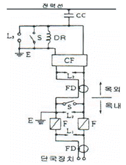
- 접지형 개폐기
- 결합 필터
- 방전갭
- 배류선륜
(정답률: 15%)
97. 강제 배류기의 시설기준에 대한 설명으로 옳지 않은 것은?
- 귀선에서는 강제 배류기를 거쳐 금속제 지중 관로로 통하는 전류를 저지하는 구조로 할 것
- 강제 배류기를 보호하기 위하여 적정한 과전류 차단기를 시설할 것
- 강제 배류기용 전원장치의 변압기는 절연변압기를 시설하고 1, 2차측 전로에는 개폐기 및 과전류차단기를 각 극에 시설한 것일 것
- 강제 배류기는 제3종 접지공사를 한 금속제 외함 기타 견고한 함에 넣어 시설하거나 사람이 접촉할 우려가 없도록 시설할 것
(정답률: 30%)
98. 저압 연접 인입선은 인입선에서 분기하는 점으로부터 몇 [m]를 초과하는 지역에 미치지 아니하도록 시설하여야 하는가?
- 10m
- 20m
- 100m
- 200m
(정답률: 34%)
99. 3상 4선식 22.9kV 중성점 다중접지 전로의 절연내력 시험 전압은 최대사용전압의 몇 배의 전압인가?
- 0.64배
- 0.72배
- 0.92배
- 1.25배
(정답률: 38%)
100. 정격 전류 30A의 전동기 1대와 정격 전류 5A의 전열기 2대에 공급하는 저압 옥내 간선을 보호할 과전류 차단기의 정격 전류의 최대값은 몇 [A]인가?
- 40A
- 70A
- 100A
- 120A
(정답률: 17%)
고도(cant) = (속도의 제곱) / (반경 × 127)
여기서, 속도는 m/s 단위로 변환해야 하므로 45[km/h]를 12.5[m/s]로 변환한다.
반경은 1000[m]이지만, 궤간이 1067[m]이므로 실제 반경은 1067[m]이다.
따라서, 고도(cant) = (12.5^2) / (1067 × 127) = 17.0[mm]
따라서, 정답은 "17.0"이다.